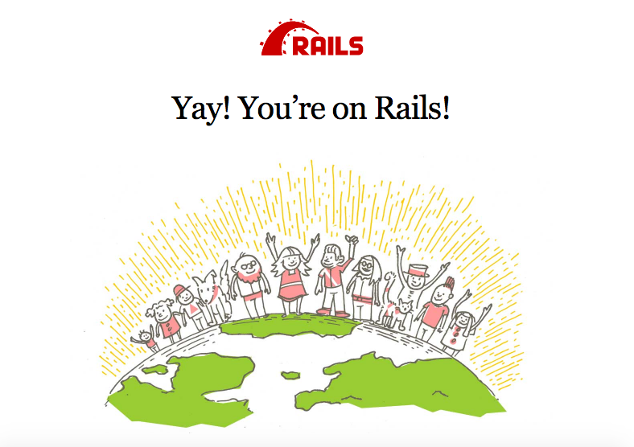
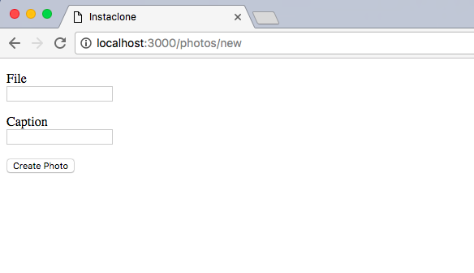
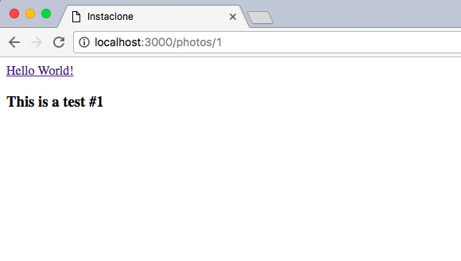
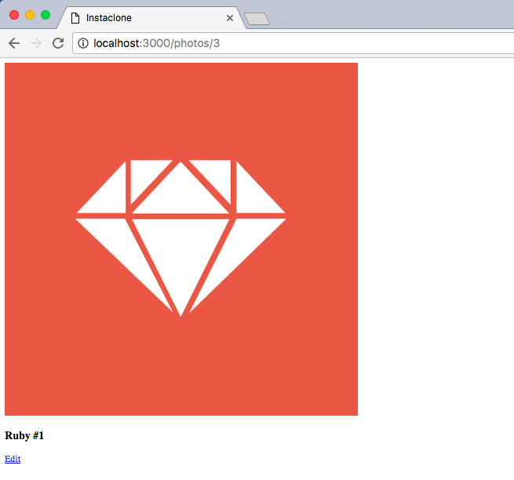
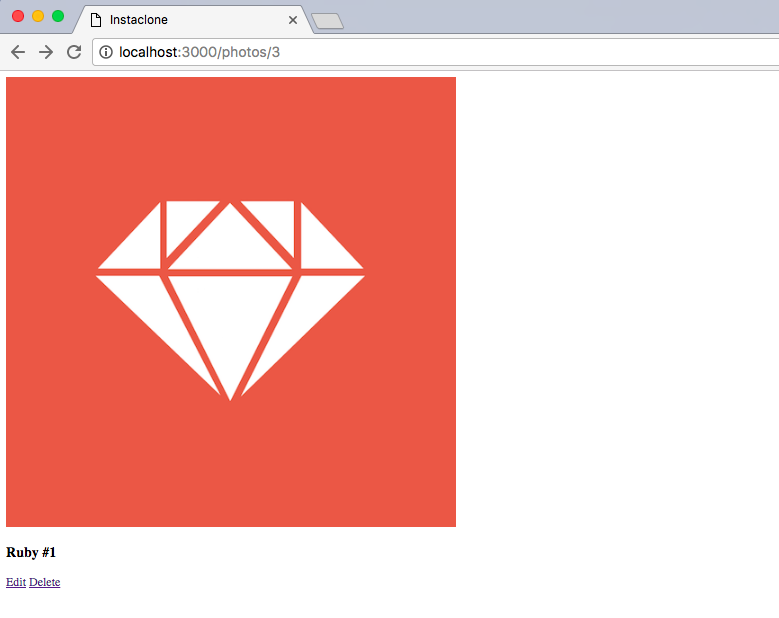
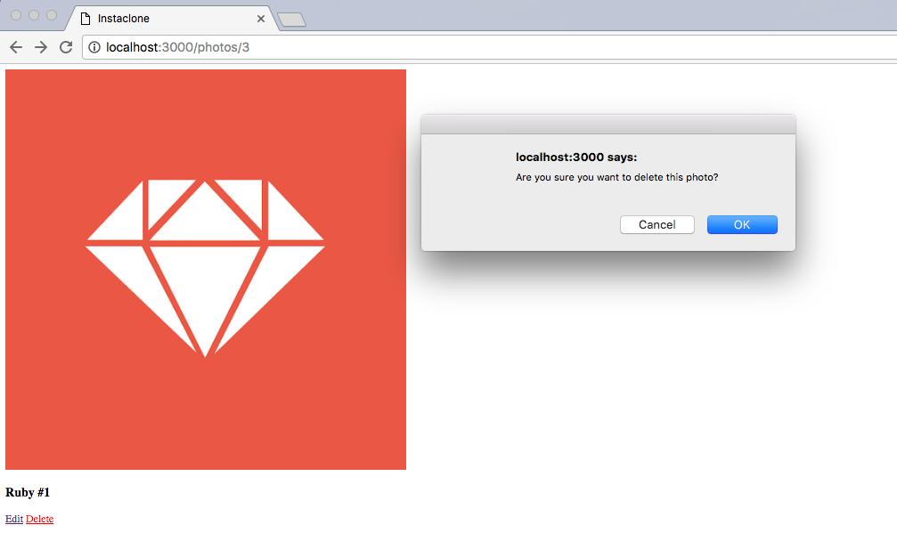
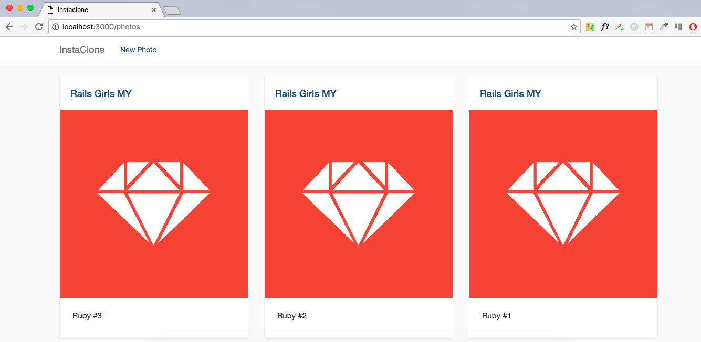
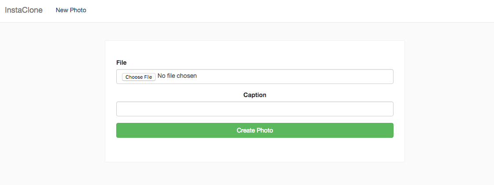
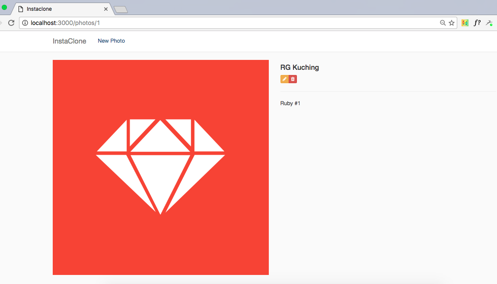

Created by Vesa Vänskä, @vesan.
Compiled for Rails Girls MY by Faezrah, @railsgirlskl.
Credits to Ben Walker for the CSS styling.
We are going to build our very own Instagram clone.
Alright, let's build it.
Let's call our new project instaclone.
To create a new project in Rails, run this command in the terminal.
{% highlight sh %} $ rails new instaclone {% endhighlight %}This will create a new Rails application called instaclone folder, and auto-generate files and folders that make up the structure of a Rails application. Most of the work in this tutorial will happen in the app sub-folder.
Now switch to your new Rails folder.
{% highlight sh %} $ cd instaclone {% endhighlight %}To see what other files Rails has generated for you, type this command in the terminal:
{% highlight sh %} $ ls {% endhighlight %}Now, we need to make sure we've got Rails working properly.
To do this, we need to run the server by typing this command:
{% highlight sh %} $ bin/rails server -b 0.0.0.0 {% endhighlight %}To see your application in action, open a browser window and navigate to: http://localhost:3000/
You should now see this friendly Rails default page.
To stop the server, hit CTRL + C.
Mentor: Explain what each command does. What was generated? What does the server do?
In your Instaclone application, you will now create a new resource. A resource is a term used to call a collection of similar objects so users will be able to access via URI and perform CRUD operations.
For example, we want to have a collection of photos in our application.
Go ahead and run this in the terminal:
{% highlight sh %} $ bin/rails generate resource photo file:string caption:string {% endhighlight %}This command will generate files we need for our photos collection, as well as two columns in our database.
But to get it to work properly we need to run a couple of other commands to update our database and restart the server.
{% highlight sh %} $ bin/rake db:migrate {% endhighlight %} {% highlight sh %} $ bin/rails server -b 0.0.0.0 {% endhighlight %}Mentor: Explain the command, the model name and related database table, naming conventions, attributes and types, etc. What are migrations and why do you need them?
Now that you have everything you need to build an Instagram clone, let's get coding.
Ideally, you need a place within the application to submit a new photo. To do this, we will need a form for our users to fill in.
Open app/controllers/photos_controller.rb, and you will see something like this:
To start with, we will need two actions in the controller. A new action and a create action.
Below the line:
{% highlight ruby %} class PhotosController < ApplicationController {% endhighlight %}Add the code like so:
{% highlight ruby %} def new @photo = Photo.new end def create @photo = Photo.new(photo_params) if @photo.save else render :new end end private def photo_params params.require(:photo).permit(:file, :caption) end {% endhighlight %}Now, go to app/views/photos/ and create a new file called new.html.erb.
Type the following code:
{% highlight erb %} <%= form_for @photo do |f| %>
<%= f.label :file %>
<%= f.text_field :file %>
<%= f.label :caption %>
<%= f.text_field :caption %>
<%= f.submit %>
<% end %> {% endhighlight %}Save the file and go to http://localhost:3000/photos/new to see the form live in your browser after you refresh it.
Checkpoint:
Your page should now look something like this:
It looks a little basic, right?
That's okay, let's focus on building our main feature before we move on to styling the application.
Mentor: Explain what is MVC in Rails.
Before we can test our new photo form, let's add another action in our app/controllers/photos_controller.rb.
Below the create action, add a show action, like so:
Next, create a show file in app/views/photos and call it show.html.erb.
In your show.html.erb, type the following code:
We also need to modify our create action a bit. Add a redirect when your photo is saved, like so:
Now, every time when we upload a new photo, if the photo is saved succefully, we will get redirected to the photo show page automatically.
Give it a try. Test the form, and it should redirect you to a page with content you've just submitted.
Checkpoint:
Your photo show page should look similar to this:
Mentor: Talk a little about CRUD operations and RESTful resources.
Now you can actually create a new caption for a photo, but how to actually upload an image?
We need to install a piece of software to let us upload files in Rails.
Open Gemfile in the project directory using your text editor and under the line:
Add this line:
{% highlight ruby %} gem 'carrierwave' {% endhighlight %}Every time you add a new gem, you need to run a command to install it to your application.
So, in the terminal, run:
{% highlight sh %}$ bundle install {% endhighlight %}At this point you might need to restart the Rails server process in the terminal.
Note: Some people might be using a second terminal to run the rails server continuously. If so you need to restart the Rails server process now. This is needed for the app to load the added library.
Go to the terminal tab which runs the server and then hit CTRL + C to quit the server. Once it has stopped, you can press the up arrow to get to the last command entered, then hit enter to start the server again.
Mentor: Explain what libraries are and why they are useful. Describe what open source software is.
Now that we have installed the gem, we can generate the code for handling uploads.
In the terminal run:
{% highlight sh %}$ bin/rails generate uploader Photo {% endhighlight %}This command will generate a new file called photo_uploader.rb. You need this file to configure your upload settings.
Next, open app/models/photo.rb and under the line:
Add:
{% highlight ruby %} mount_uploader :file, PhotoUploader {% endhighlight %}Then, open app/views/photos/new.html.erb and change:
{% highlight erb %} <%= f.text_field :file %> {% endhighlight %}To:
{% highlight erb %} <%= f.file_field :file %> {% endhighlight %}This will open your local window and let you select a photo to upload.
Sometimes, you might get an TypeError: can’t cast ActionDispatch::Http::UploadedFile to string.
If this happens, in file app/views/photos/new.html.erb change the line:
To:
{% highlight erb %} <%= form_for @photo, html: { multipart: true } do |f| %> {% endhighlight %}If you refresh your browser now, your form should now look something like this:

This time we can actually add a new photo. When you upload an image it doesn’t look nice because it only shows a path to the file, so let’s fix that.
Open app/views/photos/show.html.erb and change:
To:
{% highlight erb %} <%= image_tag(@photo.file_url, width: 600) if @photo.file.present? %> {% endhighlight %}Now refresh your browser to see what changed.
Now that we can upload our photos, we need to find a way to show all of our photos.
To do this, create an index action in our app/controllers/photos_controller.rb.
Below this line:
{% highlight ruby %} class PhotosController < ApplicationController {% endhighlight %}And before the new action, type the code:
Next, create a new file called index.html.erb inside apps/views/photos and type the following:
<%= image_tag(photo.file_url, width: 300) if photo.file.present? %> <%= photo.caption %>
<% end %> <% else %>No photos found.
<% end %><%= link_to "New Photo", new_photo_path %>
{% endhighlight %}Now, go to http://localhost:3000/photos to see the changes.
Checkpoint:
Your index page should look something like this:
Mentor: Talk a little the relationship between HTML and Rails. What part of views is HTML and what is Embedded Ruby (ERB)?
The first step we'll take is adding an edit and update actions to the PhotosController after the show action, as follows:
Now, create a file called edit.html.erb in app/views/articles/ and add a form similar to the one we used when creating new photos, like this:
<%= f.label :file %>
<%= f.file_field :file %>
<%= f.label :caption %>
<%= f.text_field :caption %>
<%= f.submit %>
<% end %> {% endhighlight %}Finally, we want to show a link to the edit action in the photo show page, like so:
{% highlight erb %} <%= link_to 'Edit', edit_photo_path(@photo) %> {% endhighlight %}Checkpoint: And here's how our app looks so far:
Just like Instagram, we would like to be able to delete our photos.
Let's first create a destroy action in the controller that deletes the specific record. We then need to provide a link to that action in our index view.
So, in our photos_controller.rb, just below the update action, type as follows:
And our simple link to that action with a warning on our show.html.erb view:
Save your file and refresh your browser, you should see a delete link available for the photo, similar to this:
When you click on the delete link, a confirmation dialog box will appear, like this:
And it’s done! Try deleting one of your photos now and see what happens.
Now, ehem... It's the moment of truth. Styling!
To start, open Gemfile, and right below the carrierwave gem, add:
Remember, you have to run:
{% highlight sh %} $ bundle install {% endhighlight %}Every time you add a new gem.
You might also need to restart your server so the newly added gem is loaded.
Now, in app/assets/stylesheets, rename application.css to application.scss.
Then, replace all of its content, with:
{% highlight ruby %} @import "bootstrap-sprockets"; @import "bootstrap"; @import "font-awesome-sprockets"; @import "font-awesome"; {% endhighlight %}Checkpoint:
My application.scss looks like this:

Next, open application.js in app/assets/javascripts, and add the following:
Below this line of code:
{% highlight js %} //= require jquery_ujs {% endhighlight %}Mentor: Talk a little about CSS, CSS Framework and Bootstrap.
Okay so you have Bootstrap installed. Now, what?
Since this application is after all, a clone of Instagram, we're going to steal their styling, just a little bit.
In app/views/layouts/, open application.html.erb and add the following code, right below body:
This is our basic header, and it's shown in all of our pages because we put the code in application.html.erb. This means we don't have to add the navbar to everything!
Still in application.html.erb, replace:
With the following:
{% highlight erb %}Now, let's style the photos index page first. Add these code to your application.scss:
Then, in app/views/photos/index.html.erb, replace the content of the page as follows:
<%= photo.caption %>
No photos found.
<% end %> {% endhighlight %}Checkpoint: Now, if you refresh your browser, the page should look something like this:
Much better than before, right?
Okay, next let's quickly tidy up our photo form and photo show page.
Open the apps/views/photos/new.html.erb, and make sure your code look similar to this:
Checkpoint: This is how my photo form looks like:
Lastly, open app/views/photos/show.html.erb and replace all of its content to:
<%= @photo.caption %>
Checkpoint: And this is how my photo show page looks like:
You probably noticed we haven't updated the styling for our edit page. But there's a reason for this.
Because our edit.html.erb page looks very similar to the new.html.erb page - that they share the same code for displaying the form, we can actually remove this duplication by using a view partial.
To do that, create a new file _photo_form.html.erb in app/views/photos and move all of the content from our new.html.erb to this new file.
Next, replace new.html.erb with the code below so we can use the partial view:
We also need to update our edit.html.erb to have the code as follows, by rewriting it completely:
Mentor: Talk about layouts and rendering in Rails.
Now, one last thing. Let's fine tune the route a little bit.
If go to the index page of your app (that’s your app URL without /photos part) it still shows the "Yay! You're on Rails!" page. Let's make it go directly to the photos page.
Open config/routes.rb and after the first line, add:
Test the change by refreshing the preview page in your browser.
Mentor: Talk about routes, and include details on the order of routes and their relation to static files.
Now, if you go to the main page of your app, you will see the list of your photos.
If you're feeling adventurous:
Check out our main page for additional guides.